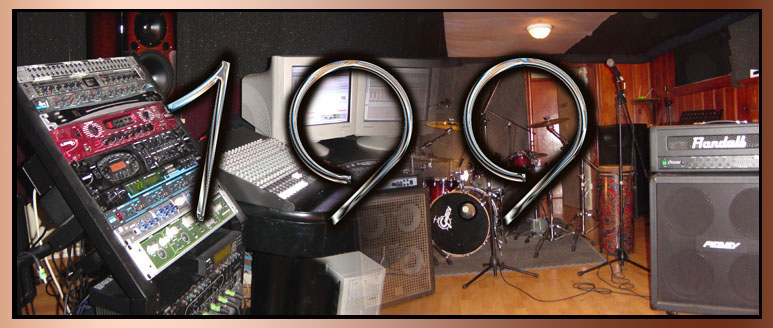

Contact Jane Lu
- Performance Booking
For shows, events and performance booking, please email to jinglumusic@yahoo.ca - Vocal Lesson
Jing Lu is now offering lessons in proper vocal techniques of various musical styles for students with talent, for detail please visit Lesson section. For private vocal lesson, please email to jinglumusic@yahoo.ca - New Album《盧婧Jane》
The First Mandarin CD Album of Jane Lu has been grandly released in Toronto! This Album has been well prepared, which combine the music talent of Jane Lu and very well known producer and musicians in Canada. This amazing new album(retail: $12.99 CAD each) is available at Yamaha Music Gallery Address: 100 Steeles Ave West (Yonge St & Steeles Ave)

Jane Lu's Blog Links

Jane Lu's Music Blog-
Videos Hot Played
Jing Lu's performance videos is getting very hot on 56.com in China. -
MySpace.com
Visit Jing Lu's MySpace Music for additional songs, information, and message board. -
Link to Jane Lu's Videos on YouTube.com
-
Link to Jane Lu's Videos on TUDOU.com
-
You can also visit Jane Space on Baidu.com
-
Link to Jane Lu's Sina Blog -
Link to Jane Lu's YouKu Videos - Jing Lu Baidu Forum
Enter Jing Lu Baidu Forum to express your opinion - Jing Lu Music on EARSonline
Enter EARSonline.com about Jing Lu Music Interview - CANBBS Jing Lu Music Forum
199 Studios

- CD Album Production
Website of 199 Studios, In Toronto Canada, where Jing Lu is currently workng on her first Mandarin CD Album: www.199studios.com